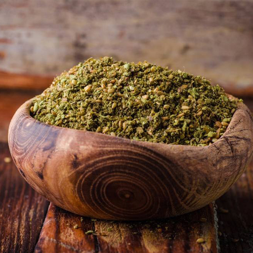
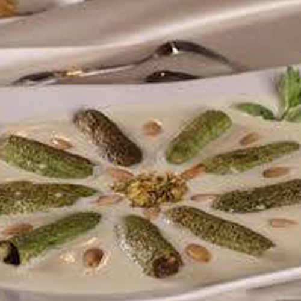
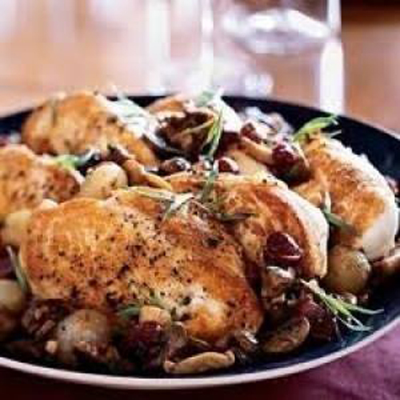

الزعتر الحلبي
المقادير
- 200 جرام سماق
- 200 جرام سمسم
- 100 جرام زعتر مجفف
- 100 جرام دقيق قمح
- 1 معلقة كبيرة كزبرة
- 1 معلقة كبيرة كمون
- 1 معلقة كبيرة فستق مقشر
- 1 معلقة كبيرة ملح
- رشة ملح ليمون
طريقة التحضير
- يحمص كلاً من الكزبرة والينسون والكمون والسمسم والسماق، مع ضرورة تحميص كلاً على حدة.
- يوضع دقيق القمح في الكبة، ويضاف إليه السماق والكمون والكزبرة والينسون والفستق والزعتر والملح وملح الليمون، وتطحن جيداً حتى تنعم.
- يضاف إليه السمسم، ويقلب جيداً حتى يختلط السمسم جيداً بباقي المكونات.
- يوضع في برطمان نظيف وجاف.
- يقدم مع زيت الزيتون والخبز السوري.

شيخ المحشي الشامي
المقادير
- 1 كيلو كوسة
- نصف كيلو لحمة مفرومة
- 1 لتر حليب
- 1 لتر ماء
- 1 كوب صنوبر
- 2 بيضة
- 1 حبة بصل مفروم
- 3 معلقة كبيرة نشا
- زيت
- ملح
- فلفل أسود
- بهارات
طريقة التحضير
- تغسل الكوسة جيداً، وتقطع من أعلى وأسفل.
- يكشط قشر الكوسة قليلاً، وتقور بالطريقة التقليدية، ولكن مع مراعاة عدم كسرها أو ثقبها.
- يوضع قليل من الزيت في مقلاة على النار، ويوضع فيه البصل، ويقلب حتى يذبل.
- تضاف اللحمة المفرومة، وتقلب جيداً حتى يتغير لونها.
- تتبل اللحمة بالملح والفلفل الاسود والبهارات، وتقلب مرة أخرى.
- يضاف الصنوبر، وتقلب مرة أخرى، تخفف النار وتترك حتى تنضج.
- ترفع اللحمة من على النار وتترك حتى تبرد.
- تحشى الكوسة بخليط اللحم والصنوبر، وتغلق بجزء قليل من تقوير الكوسة.
- يوضع الزيت في مقلاة على نار متوسطة، وتقلى فيه الكوسة المحشية، وتقلب حتى تحمر قليلاً.
- لابد من الحرص أثناء تقليب الكوسة حتى لا تكسر أو يخرج منها الحشو.
- تذاب النشا في الماء.
- يوضع الحليب في وعاء، ويضاف إليها البيض، ويقلب جيداً.
- يوضع الحليب على النار، ويقلب جيداً حتى يسخن.
- يضاف خليط النشا بالماء على الحليب ببطء مع التقليب المستمر.
- يقلب الحليب المضاف إليه النشا حتى يغلي ويثقل.
- تضاف الكوسة إلى الحليب، وتتبل بالملح والفلفل.
- تترك على نار هادئة لمدة عشر دقائق وحتى تنضج.
- توضع الكوسة في الطبق، ويصب عليها الحليب.
- تزين بالصنوبر، وتقدم.

دجاج بالزعتر والزبادي
المقادير
- دجاجة كبيرة مقطعة إلى 8 قطع
- علبة زبادى
- نصف ملعقة صغيرة من الزعتر الطازج
- 3 فصوص ثوم مهروس
- ملح
- فلفل
- كمون
- بهارات
طريقة التحضير
- تغسل قطع الدجاج بالدقيق والملح لتنظيفها جيدا ثم يتم شطفها بالمياه
- يتم خلط الزبادى بالثوم المهروس والزعتر والكمون والبهارات
- ضعى قطع الدجاج فى الخليط ثم يوضع فى صينية مستطيلة وتغطى بورق ألألمونيوم "فويل" توضع فى الفرن إلى أن تنضج وتقدم ساخنة مع المكرونة والبطاطس المقلية